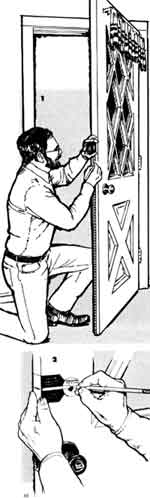
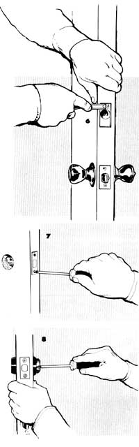
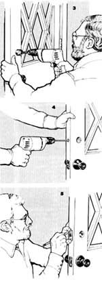
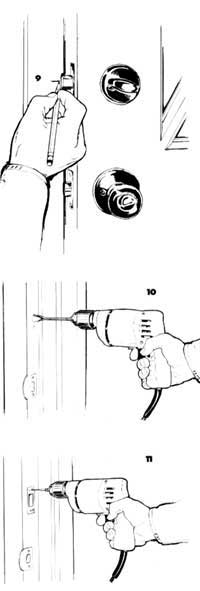

1 To position the dead bolt, measure along the edge of the door to a point 40" to 45" above the floor, and mark a height line with a pencil. If the dead bolt is to be used with an existing doorknob, position it 4" to 6"above the knob.
2 Place the paper template provided by the lock manufacturer on the height line, and mark the center points for the latch bolt and cylinder holes.
3 Bore the cylinder hole to the diameter specified on the lock kit instruction sheet. First drill 1/8" pilot hole through the door; then carefully guide a hole saw from both sides to complete the opening.
4 Use a spade or auger bit to bore the latch bolt hole to the size indicated on the instruction sheet.
5 Insert the dead bolt latch into the hole, and trace an outline around the faceplate.
6 Using a sharp wood chisel, mortise the marked area to a depth that allows the faceplate to be flush with the door edge.
7 Reinsert the dead bolt latch and secure it, using the wood screws provided with the lock kit.
8 Place the cylinder, guard and trim cover into the cylinder hole. Slide the interior thumb turn and backing plate (if any) over the cylinder torque blade, align the holes, and fasten the parts together with the machine screws provided.
9 To install the strike plate, mark the jamb exactly opposite the height line on the door, at the center of the extended dead bolt.
10 To find the strike plate's center line, measure ½ the thickness of the door back from the door stop, or from the edge of any existing weatherstrip. Drill two ¾" holes, 1" deep, centered ¼" above and below the height line to create an oblong socket. Note that some strike plates require only a single centered 1" hole.
11 Mortise an area around the hole to accommodate the strike and, if provided, its reinforcement plate. Attach the plate(s) to the jamb with the long wood screws remaining in the kit.
|
 ILLUSTRATIONS BY CLARENCE GOOSEN |
 |
 |
|
 |
|
|